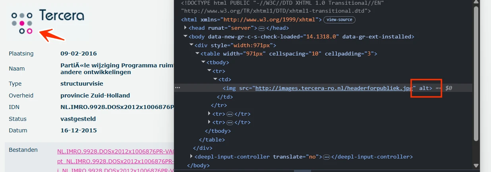
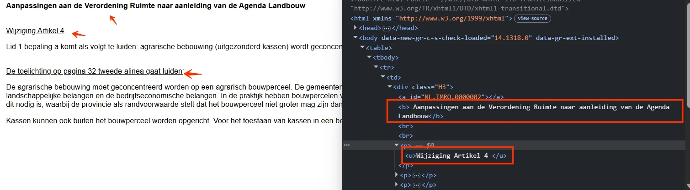
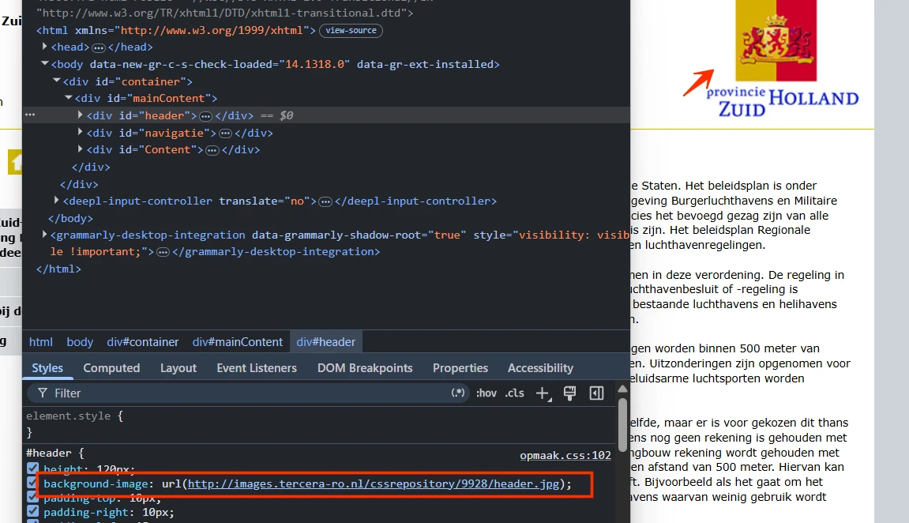
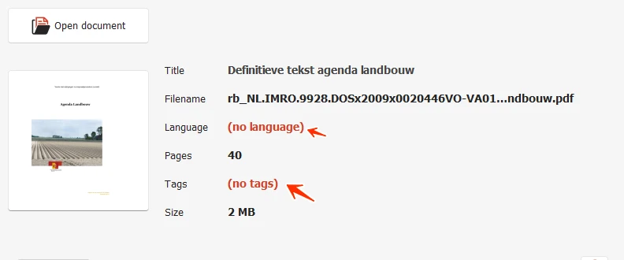

Audit digitale toegankelijkheid van website ro.zuid-holland.nl
Samenvatting
Wij hebben de website ro.zuid-holland.nl onderzocht tussen 7 en 11 augustus 2026. Op dit moment is een deel van de succescriteria als voldoende beoordeeld. In dit rapport lees je welke punten nog verbetering behoeven en hoe deze kunnen worden aangepakt.
Op deze website ontbreekt het lang-attribuut op het html-element. Daarmee ligt niet vast in welke taal de pagina is geschreven. Alle dertien HTML-pagina's uit de steekproef hebben dit probleem. Een schermlezer kiest dan zelf een taal en leest de tekst voor met de verkeerde uitspraakregels. De inhoud is daardoor moeilijk te volgen.
User story
Ik lees de website met een schermlezer. Als ik een pagina open, kiest mijn schermlezer de verkeerde taal en klinkt de tekst onbegrijpelijk. Ik verwacht dat mijn schermlezer de inhoud automatisch in de juiste taal voorleest.
Hoe te testen
Bekijk de broncode van de pagina en controleer het <html>-element. Dat element hoort een lang-attribuut te hebben met de taal van de pagina, bijvoorbeeld <html lang="nl">.
Oplossing
Voeg het lang-attribuut toe aan het html-element en geef het de juiste taalcode, bijvoorbeeld lang="nl" voor Nederlands.
#2 - Herhalende content is niet te omzeilen
Impact: GrootType: TechniekWCAG: 2.4.1EN: 9.2.4.1
Op de pagina's van deze website ontbreekt een manier om blokken met herhalende inhoud over te slaan. Er is geen skiplink en er zijn geen landmarks. Ook de koppenstructuur biedt geen alternatief, omdat die op deze pagina's ontbreekt. Bezoekers die de website met het toetsenbord bedienen lopen daardoor op elke pagina eerst alle onderdelen van het menu langs voordat ze bij de hoofdinhoud zijn.
User story
Ik bedien de website met het toetsenbord. Als ik een pagina open, moet ik met de Tab-toets langs elk element in het hoofdmenu voordat ik bij de inhoud kom. Dat herhaalt zich op elke pagina van de website. Ik verwacht dat ik direct naar de hoofdinhoud kan springen.
Hoe te testen
Druk vanuit de adresbalk één keer op Tab. De skiplink hoort het eerste element te zijn dat toetsenbordfocus krijgt. De link wordt zichtbaar zodra hij focus krijgt en verplaatst de focus naar de hoofdinhoud zodra je hem activeert.
Oplossing
Voeg een skiplink toe die de toetsenbordfocus naar de hoofdinhoud verplaatst. Deze link moet de eerste link op de pagina zijn. De link mag standaard verborgen zijn, maar moet zichtbaar worden zodra hij toetsenbordfocus krijgt.
Een andere techniek is het gebruik van landmarks, zoals header, nav, main en footer. Deze techniek is nog niet volledig accessibility supported.
#3 - Er is maar één manier om een pagina te vinden
Als ik een pagina niet via de links op de pagina kan vinden, heb ik geen andere route. Ik verwacht dat ik de pagina ook via een zoekveld of een sitemap kan bereiken.
Hoe te testen
Controleer of er naast de links op de pagina een tweede route naar een pagina bestaat. Denk aan een zoekveld, een link naar een sitemap, of een paginavoettekst met links naar alle hoofdonderdelen.
Oplossing
Voeg een zoekfunctie of een link naar een sitemap toe aan het gedeelde websiteframe, zodat die tweede route op elke pagina aanwezig is.
Als deze pagina wordt bekeken op een schermresolutie van 1280 bij 1024 pixels en wordt ingezoomd tot 400%, verschijnt er een horizontale scrollbalk. Bezoekers moeten dan bij elke regel heen en weer scrollen om de tekst te kunnen lezen.
Ik zoom in tot 400% om de pagina te kunnen lezen. Als ik inzoom, verschijnt er een horizontale scrollbalk en moet ik bij elke regel heen en weer scrollen. Ik verwacht dat de tekst automatisch binnen de breedte van mijn scherm past.
Hoe te testen
Zet de browser op een breedte van 320 CSS-pixels, of op 1280 pixels met 400% zoom, en scroll verticaal. Er hoort geen horizontaal scrollen nodig te zijn om de inhoud te lezen. Uitzondering zijn onderdelen die echt twee richtingen nodig hebben, zoals tabellen, kaarten en code.
Oplossing
Horizontaal scrollen over de hele pagina is niet toegestaan, ook niet als de viewport is ingesteld op of ingezoomd tot 320 CSS-pixels breed (voor verticale inhoud) of 256 CSS-pixels hoog (voor horizontale inhoud). Zorg ervoor dat de tekst binnen het scherm past. Scrollen in twee richtingen mag alleen als dat echt nodig is voor de betekenis of het gebruik van de inhoud. Uitzonderingen zijn tabellen, informatieve afbeeldingen en kaarten. Die moeten leesbaar blijven, dus binnen die elementen mag je wel scrollen.
Op deze pagina staan roze links (#E62DA5) op een lichtgrijze achtergrond (#E6EAED), bijvoorbeeld "NL.IMRO.9928.DOSx2012x1006876PR-VA01.gml". De contrastverhouding is 3,3:1 en daarmee te laag. Deze tekst is niet voor iedereen zichtbaar.
User story
Ik heb een visuele beperking. Als tekst te weinig contrast heeft met de achtergrond waarop hij staat, wordt hij moeilijk leesbaar. Ik verwacht dat tekst genoeg contrast heeft om makkelijk te kunnen lezen.
Hoe te testen
Open de WCAG Radar en zet de optie "Contrast" aan. Tekst op een egale achtergrond met te weinig contrast wordt automatisch gemarkeerd. Voor tekst op een foto of een kleurverloop gebruik je de twee pipetten om de kleur van de tekst en van de achtergrond te meten. Het minimum is 4,5:1 voor normale tekst en 3,0:1 voor grote tekst (24px of groter, of 18,7px of groter bij vette tekst). Vergeet placeholders, tekst op afbeeldingen en elementen die uitgeschakeld lijken niet.
Oplossing
Omdat deze tekst kleiner is dan 19px, moet het contrast minimaal 4,5:1 zijn.
#6 - Logo heeft geen tekstalternatief
Impact: GrootType: TechniekWCAG: 1.1.1EN: 9.1.1.1

Het logo bovenaan de pagina heeft geen tekstalternatief. Het alt-attribuut is leeg.
Een logo is een informatieve afbeelding en heeft daarom een tekstalternatief nodig. In dat tekstalternatief hoort de volledige tekst te staan die in het logo zichtbaar is. Zo weten ook bezoekers die de afbeelding niet kunnen zien wat er staat.
User story
Ik lees de website met een schermlezer. Ik wil dat het logo in de kop van de pagina een betekenisvol tekstalternatief heeft, zodat ik weet waar het voor staat en, als het een link is, waar die naartoe gaat.
Hoe te testen
Navigeer met een schermlezer naar het logo in de kop van de website en controleer of het logo wordt aangekondigd met een tekstalternatief dat de organisatie of de website benoemt. Controleer of het logo niet wordt aangekondigd als een link of afbeelding zonder naam, en of de volledige zichtbare tekst erin staat.
Oplossing
Geef deze afbeelding een tekstalternatief waarin de volledige tekst van het logo staat.
Het <title>-element van deze pagina is leeg. Dat element is verplicht en hoort een korte en informatieve beschrijving van de inhoud van de pagina te bevatten, bij voorkeur gevolgd door de naam van de organisatie. Bezoekers weten daardoor waar de pagina over gaat en kunnen makkelijker navigeren.
Ik lees de website met een schermlezer. Als ik een nieuw tabblad open, hoor ik geen paginatitel die mij vertelt waar de pagina over gaat. Ik verwacht dat mijn schermlezer een duidelijke titel aankondigt zodra de pagina is geladen.
Hoe te testen
Controleer van elke pagina de titel in het tabblad van de browser. De titel moet het onderwerp of het doel van de pagina beschrijven en uniek zijn binnen de website. Ook PDF's hebben een betekenisvolle titel nodig, ingesteld in de documenteigenschappen en niet alleen zichtbaar op het scherm.
Oplossing
Vul het <title>-element met een beschrijvende tekst die de inhoud van de pagina weergeeft.
#8 - Kop is niet als kop gemarkeerd
Impact: MediumType: InhoudWCAG: 1.3.1EN: 9.1.3.1

Op deze pagina zijn de volgende teksten visueel opgemaakt als kop, maar in de code is dat niet het geval: "Aanpassingen aan de Verordening Ruimte naar aanleiding van de Agenda Landbouw", "Wijziging Artikel 4" en "De toelichting op pagina 32 tweede alinea gaat luiden:".
Koppen leggen de structuur van de informatie op de pagina vast. Zonder echte kop-elementen komt de structuur in de code niet overeen met wat er op de pagina te zien is, en missen bezoekers die hulpsoftware gebruiken die structuur.
Ik lees de website met een schermlezer. Ik laat de koppen voorlezen om de inhoud van de pagina te scannen en ik navigeer van kop naar kop. Als koppen niet als kop zijn gemarkeerd, mis ik die onderdelen en kan ik minder makkelijk navigeren.
Hoe te testen
Open de WCAG Radar en zet de optie "Koppen en structuur" aan.
Controleer elke tekst op de pagina die er visueel uitziet als een kop: groter, vetter, een afwijkende kleur of een nadrukkelijke plaatsing.
Krijgen ze allemaal een kopmarkering van de WCAG Radar? Zo niet, dan zijn ze niet met h1 tot en met h6 gemarkeerd.
Controleer het daarna met een schermlezer: navigeer met H (NVDA, JAWS) of met de rotor (VoiceOver). Elke visuele kop hoort als kop te worden aangekondigd.
Oplossing
Markeer koppen met de kop-elementen h1 tot en met h6, met het kopniveau dat past bij hun rol en plaats in de inhoud.
De titel van deze pagina is "ro.zuid-holland.nl - /Verordening/Herziening_Agenda_Landbouw/vastgesteld_PS/". Dat is het pad van de map op de server en geen beschrijving van de inhoud van de pagina. Het <title>-element hoort een duidelijke en korte samenvatting van het onderwerp te geven, bij voorkeur gevolgd door de naam van de organisatie. Bezoekers begrijpen daardoor waar de pagina over gaat en kunnen makkelijker schakelen tussen pagina's en tabbladen.
Dezelfde opbouw staat op de andere overzichtspagina's uit de steekproef:
Ik lees de website met een schermlezer. Als ik tussen tabbladen wissel, hoor ik alleen een vage titel en weet ik niet welke pagina open staat. Ik verwacht dat de titel duidelijk beschrijft waar de pagina over gaat.
Hoe te testen
Controleer van elke pagina de titel in het tabblad van de browser. De titel moet het onderwerp of het doel van de pagina beschrijven en uniek zijn binnen de website. Ook PDF's hebben een betekenisvolle titel nodig, ingesteld in de documenteigenschappen en niet alleen zichtbaar op het scherm.
Oplossing
Pas het <title>-element aan, zodat het de inhoud van de pagina nauwkeurig en beschrijvend weergeeft.
Op deze pagina staat inhoud die visueel een opsomming is, met nummers ervoor, maar die in de code niet met lijst-elementen (<ol>, <li>) is gemarkeerd. Zonder die markering kan een schermlezer niet herkennen dat het om een lijst gaat en kondigt hij het aantal items niet aan. Bezoekers die hulpsoftware gebruiken missen zo structuurinformatie die ziende bezoekers wel zien.
User story
Ik lees de website met een schermlezer. Als informatie als lijst wordt gepresenteerd, wil ik die structuur horen. Ik verwacht dat mijn schermlezer de structuur en het aantal items aankondigt.
Hoe te testen
Bekijk de pagina met een schermlezer of met de ontwikkelaarshulpmiddelen van de browser en controleer of opsommingen die visueel als lijst worden weergegeven, met lijst-elementen (<ol>, <li>) zijn gemarkeerd. Controleer of er geen handmatig ingevoerde streepjes of andere tekens in de plaats van echte lijstmarkering worden gebruikt.
Oplossing
Markeer de opsomming met de juiste HTML-elementen: <ul> voor een ongeordende lijst of <ol> voor een geordende lijst, met elk item in een <li>-element.
Op deze pagina zijn teksten wel koppen, maar ontbreken de kop-elementen. Het strong-element en het em-element zijn gebruikt om ze eruit te laten zien als kop. Zie bijvoorbeeld "2.1 Contourenbeleid op de onderzoeksagenda" en "landelijk wonen".
Het strong-element en het em-element zijn bedoeld om tekst nadruk te geven en niet om koppen mee te maken. Gebruik je ze in plaats van de kop-elementen h1 tot en met h6, dan komt de structuur van de inhoud niet in de code terecht en is die niet beschikbaar voor hulpsoftware.
User story
Ik lees de website met een schermlezer. Als ik door de koppen navigeer, mis ik de koppen die niet als kop zijn gemarkeerd. Ik verwacht dat alle koppen echte koppen zijn, zodat ik de structuur van de pagina kan volgen.
Hoe te testen
Open de WCAG Radar, zet de optie "Koppen en structuur" aan en controleer elke kop op de pagina. Krijgt een kop geen markering h1 tot en met h6, dan is die kop niet goed gemarkeerd.
Oplossing
Verwijder het strong-element en het em-element en markeer deze teksten met het passende kop-element. De visuele opmaak kan met CSS worden toegepast.
Op de kaarten op deze pagina wordt alleen kleur gebruikt om informatie te onderscheiden, bijvoorbeeld groen en geel. Alleen bezoekers die de kleuren kunnen zien en van elkaar kunnen onderscheiden, zien welke kleur bij welke categorie hoort.
Deze bevinding hangt ook samen met succescriterium 1.3.3. Boven de kaarten staat een toelichting die uitlegt wat de kleuren betekenen, maar die toelichting verwijst naar onderdelen van de kaart uitsluitend met een kleur. Bijvoorbeeld: "Op de functiekaart krijgen de twee meest noordelijk gelegen geel omlijnde gebieden...".
Ik zie het verschil tussen kleuren niet. Als een kaart alleen kleur gebruikt om het verband tussen de legenda en de gebieden te leggen, begrijp ik de verhoudingen tussen de gebieden niet. De kaart is dan onbruikbaar voor mij.
Hoe te testen
Bekijk de pagina in grijstinten: open de WCAG Radar en zet de optie "Grijstinten" aan. Controleer of de gebieden op de kaart en de items in de legenda zonder kleur nog van elkaar te onderscheiden zijn. Er is een tweede kenmerk nodig: tekst, een pictogram, een arcering of een vorm.
Oplossing
Gebruik naast kleur ook verschillende arceringen of vormen, of voeg labels met tekst toe. Een toegankelijke tekst of een tabel met dezelfde informatie kan ook.
#13 - Kleurcontrast van informatieve elementen is onvoldoende
Op deze pagina staan kaarten waarop sommige kleurcombinaties te weinig contrast hebben. Bijvoorbeeld felgroen (#73EA36) op een lichtgrijze achtergrond (#E7E7E7): de contrastverhouding is 1,3:1 en daarmee te laag. Ook andere kleuren op deze kaarten hebben te weinig contrast.
Ik heb een visuele beperking. Als ik naar een kaart kijk, kan ik de lijnen niet uit elkaar houden. Ik verwacht dat alle onderdelen van een kaart duidelijk van elkaar te onderscheiden zijn.
Hoe te testen
Meet met de Colour Contrast Analyser het contrast van alle informatieve lijnen, balken en vlakken op een kaart. Meet die onderdelen tegen de achtergrond waarop ze staan en tegen elkaar.
Oplossing
Zorg dat het contrast van informatieve elementen ten opzichte van aangrenzende vlakken op de kaart minimaal 3,0:1 is, zodat bezoekers ze van elkaar kunnen onderscheiden. Controleer alle kleuren op deze kaarten.
Die titel beschrijft de inhoud van de pagina bovendien niet. Elke pagina hoort een unieke en beschrijvende titel te hebben. Dezelfde titels op meerdere pagina's zijn verwarrend en maken het navigeren tussen pagina's lastiger, vooral voor bezoekers die pagina's herkennen aan de titelbalk of het tabblad van de browser.
User story
Ik lees de website met een schermlezer. Als ik meerdere tabbladen open heb, klinken de paginatitels hetzelfde en kan ik niet zien welk tabblad bij welke pagina hoort. Ik verwacht dat elke pagina een unieke titel heeft die de inhoud duidelijk beschrijft.
Hoe te testen
Controleer van elke pagina de titel in het tabblad van de browser. De titel moet het onderwerp of het doel van de pagina beschrijven en uniek zijn binnen de website. Ook PDF's hebben een betekenisvolle titel nodig, ingesteld in de documenteigenschappen en niet alleen zichtbaar op het scherm.
Oplossing
Pas het <title>-element aan, zodat elke pagina een unieke en informatieve titel heeft die de inhoud van die pagina nauwkeurig weergeeft.
#15 - Logo heeft geen tekstalternatief
Impact: GrootType: TechniekWCAG: 1.1.1EN: 9.1.1.1

Het logo bovenaan de website heeft geen tekstalternatief. Dit logo is als achtergrondafbeelding ingesteld, en een achtergrondafbeelding kan geen tekstalternatief hebben.
Een logo is een informatieve afbeelding en heeft daarom een tekstalternatief nodig. In dat tekstalternatief hoort de volledige tekst te staan die in het logo zichtbaar is. Zo weten ook bezoekers die de afbeelding niet kunnen zien wat er staat.
Ik lees de website met een schermlezer. Ik wil dat het logo in de kop van de pagina een betekenisvol tekstalternatief heeft, zodat ik weet waar het voor staat en, als het een link is, waar die naartoe gaat.
Hoe te testen
Navigeer met een schermlezer naar het logo in de kop van de website en controleer of het logo wordt aangekondigd met een tekstalternatief dat de organisatie of de website benoemt. Controleer of het logo niet wordt aangekondigd als een link of afbeelding zonder naam, en of de volledige zichtbare tekst erin staat.
Oplossing
Zet het logo als afbeelding in de HTML en geef die afbeelding een tekstalternatief waarin de volledige tekst van het logo staat.
#16 - Afbeeldingslinks hebben geen tekstalternatief
Op deze pagina staan pictogrammen met een pijl en een huisje die als link fungeren. Het alt-attribuut van die afbeeldingen is leeg (alt=""), waardoor de afbeeldingen verborgen zijn voor schermlezers. De link houdt daarmee geen enkele inhoud over en de bestemming is onduidelijk (succescriterium 2.4.4). De link heeft daardoor ook geen toegankelijke naam, wat succescriterium 4.1.2 raakt.
Ik lees de website met een schermlezer. Als ik een afbeelding tegenkom die als link wordt gebruikt, maakt de toegankelijke naam niet duidelijk waar die link naartoe gaat. Ik verwacht dat elke link een duidelijke omschrijving heeft, zodat ik weet waar ik terechtkom.
Hoe te testen
Open de WCAG Radar en gebruik de optie "Toegankelijke naam". Controleer de afbeeldingslink en kijk of de toegankelijke naam duidelijk maakt waar de link naartoe gaat. Is de naam leeg of beschrijft hij de bestemming niet, dan voldoet de link niet.
Oplossing
Geef de link toegankelijke inhoud. Dat kan op deze manieren:
Geef de afbeelding een tekstalternatief dat de bestemming van de link aangeeft.
Zet tekst in de link die visueel verborgen is met CSS, bijvoorbeeld met een .sr-only-klasse.
Geef de link een aria-label met een korte omschrijving van de bestemming.
#17 - Onvoldoende contrast van het pictogram op links
Op deze pagina staan pictogrammen met een pijl en een huisje die als link fungeren. Het contrast tussen het witte pictogram en de gele achtergrond (#D2BC07) is 1,9:1 en daarmee te laag. Bezoekers met een visuele beperking of kleurenblindheid zien het pictogram daardoor slecht of helemaal niet.
Ik heb een visuele beperking. Ik verwacht dat pictogrammen op links duidelijk zichtbaar zijn tegen de achtergrond.
Hoe te testen
Meet met de Colour Contrast Analyser het contrast tussen het element en de achtergrond waarop het staat. Het minimum is 3,0:1. Je kunt hiervoor ook de WCAG Radar gebruiken met de optie "Contrast".
Oplossing
Zorg dat het pictogram een contrast van minimaal 3,0:1 heeft ten opzichte van de achtergrond.
#18 - Onjuist gebruik van het p-element
Impact: MediumType: InhoudWCAG: 1.3.1EN: 9.1.3.1
Op deze pagina staat onder de tekst "Toelichting artikel 14 Luchthavens en helihavens" een tekstblok met meerdere alinea's dat in de code als één <div>-element is gemarkeerd. Visueel zijn er meerdere alinea's met witruimte ertussen zichtbaar; die structuur komt in de code niet terug.
Ik lees de website met een schermlezer. Als ik door de tekst navigeer, worden alle alinea's als één lang blok voorgelezen. Ik verwacht dat ik elke zichtbare alinea apart kan bereiken.
Hoe te testen
Bekijk de structuur van de inhoud en controleer of alinea's die visueel los van elkaar staan, als aparte <p>-elementen zijn gemarkeerd. Navigeer daarna met een schermlezer per alinea door de inhoud, bijvoorbeeld met de P-toets in NVDA. Elke zichtbare alinea hoort een eigen alinea te zijn die je apart kunt bereiken.
Oplossing
Plaats elke alinea in een eigen <p>-element. Het aantal alinea's dat wordt weergegeven, hoort overeen te komen met het aantal <p>-elementen in de code.
Als deze pagina wordt bekeken op een schermresolutie van 1280 bij 1024 pixels en wordt ingezoomd tot 400%, zijn de navigatielinks niet meer zichtbaar en niet meer te bedienen. Bijvoorbeeld de link "Visie op Zuid-Holland - verordening Ruimte, geconsolideerde versie".
Inzoomen tot 400% mag de werking of de zichtbaarheid van informatieve elementen niet aantasten.
Ik zoom in tot 400% om de pagina te kunnen lezen. Als ik ver inzoom, verdwijnen sommige knoppen en links of zijn ze niet meer te bedienen. Ik verwacht dat alles op de pagina blijft werken als ik inzoom.
Hoe te testen
Zet de browser op een breedte van 320 CSS-pixels, of op 1280 pixels met 400% zoom. Controleer of alle links, knoppen en andere bedieningselementen zichtbaar blijven en te bedienen zijn.
Oplossing
Zorg dat alles blijft werken bij 400% zoom op een scherm van 1280 bij 1024 pixels.
Op deze pagina staat gele tekst (#D2BC07) op een witte achtergrond, bijvoorbeeld "artikel 1 Algemene bepalingen en begripsbepalingen". De contrastverhouding is 1,9:1 en daarmee te laag. Deze tekst is niet voor iedereen zichtbaar.
User story
Ik heb een visuele beperking. Als tekst te weinig contrast heeft met de achtergrond waarop hij staat, wordt hij moeilijk leesbaar. Ik verwacht dat tekst genoeg contrast heeft om makkelijk te kunnen lezen.
Hoe te testen
Open de WCAG Radar en zet de optie "Contrast" aan. Tekst op een egale achtergrond met te weinig contrast wordt automatisch gemarkeerd. Voor tekst op een foto of een kleurverloop gebruik je de twee pipetten om de kleur van de tekst en van de achtergrond te meten. Het minimum is 4,5:1 voor normale tekst en 3,0:1 voor grote tekst (24px of groter, of 18,7px of groter bij vette tekst). Vergeet placeholders, tekst op afbeeldingen en elementen die uitgeschakeld lijken niet.
Oplossing
Omdat deze tekst kleiner is dan 19px, moet het contrast minimaal 4,5:1 zijn.
Elke pagina hoort een unieke en beschrijvende titel te hebben. Dezelfde titels op meerdere pagina's zijn verwarrend en maken het navigeren tussen pagina's lastiger, vooral voor bezoekers die pagina's herkennen aan de titelbalk of het tabblad van de browser.
User story
Ik lees de website met een schermlezer. Als ik meerdere tabbladen open heb, klinken de paginatitels hetzelfde en kan ik niet zien welk tabblad bij welke pagina hoort. Ik verwacht dat elke pagina een unieke titel heeft die de inhoud duidelijk beschrijft.
Hoe te testen
Controleer van elke pagina de titel in het tabblad van de browser. De titel moet het onderwerp of het doel van de pagina beschrijven en uniek zijn binnen de website. Ook PDF's hebben een betekenisvolle titel nodig, ingesteld in de documenteigenschappen en niet alleen zichtbaar op het scherm.
Oplossing
Pas het <title>-element aan, zodat elke pagina een unieke en informatieve titel heeft die de inhoud van die pagina nauwkeurig weergeeft.
Op deze pagina staan boven de eerste kaart twee links zonder toegankelijke naam. Bezoekers die een schermlezer gebruiken horen daardoor niet wat de functie of de bestemming van de link is (succescriterium 2.4.4). Elke link hoort een toegankelijke naam te hebben die de bestemming duidelijk beschrijft.
User story
Ik lees de website met een schermlezer. Als ik door de links op de pagina navigeer, hoor ik alleen "link" zonder verdere omschrijving. Ik verwacht dat elke link een duidelijke naam heeft, zodat ik weet waar ik terechtkom.
Hoe te testen
Controleer elk bedieningselement (link, knop, invoerveld, samengesteld element) met het toegankelijkheidspaneel van de ontwikkelaarshulpmiddelen en met een schermlezer. Elk element hoort over te brengen: wat het is (de rol), de naam, de huidige status (uitgeklapt, geselecteerd, aangevinkt) en waar van toepassing de waarde. Gebruik bij voorkeur standaard-HTML in plaats van eigen ARIA.
Oplossing
Geef deze links een toegankelijke naam, bijvoorbeeld met een beschrijvende linktekst, met een aria-label of met een andere passende techniek.
#23 - Onzichtbaar element krijgt toetsenbordfocus
Impact: GrootType: TechniekWCAG: 2.4.3EN: 9.2.4.3
Op deze pagina komt de toetsenbordfocus na de link met het huisje-pictogram terecht op onzichtbare interactieve elementen. Onzichtbare interactieve elementen horen niet in de focusvolgorde te staan. Bezoekers kunnen ze onbedoeld activeren en de navigatie wordt onvoorspelbaar, vooral voor wie de website met het toetsenbord bedient.
User story
Ik bedien de website met het toetsenbord. Als ik met Tab door de pagina ga, komt mijn focus soms op elementen die ik niet kan zien. Ik verwacht dat de focus alleen op zichtbare elementen terechtkomt.
Hoe te testen
Loop met de Tab-toets door de pagina. De focusindicator hoort nooit te verdwijnen op een onzichtbaar element of op een element buiten het scherm. Verdwijnt de indicator terwijl je verder tabt, dan krijgt een verborgen element toch focus. Zoek in de DOM naar focusbare elementen die visueel verborgen zijn.
Oplossing
Zorg dat alleen zichtbare bedieningselementen focusbaar zijn en dat de focusvolgorde een logische volgorde aanhoudt.
#24 - Linktekst bevat onleesbare tekens
Impact: MediumType: InhoudWCAG: 2.4.4EN: 9.2.4.4
Op deze pagina staan links naar kaarten. De toegankelijke namen van die links bevatten tekens die niet voor te lezen zijn, bijvoorbeeld streepjes. Daardoor is niet duidelijk waar de link naartoe gaat.
User story
Ik lees de website met een schermlezer. Als ik een link tegenkom, leest mijn schermlezer streepjes en underscores voor in plaats van woorden. Ik verwacht dat een linktekst uit leesbare woorden bestaat die beschrijven waar de link naartoe gaat.
Hoe te testen
Open de lijst met links in de WCAG Radar met de optie "Links" en de optie "Toegankelijke naam". Zoek links waarvan de toegankelijke naam niet leesbaar is, zoals codes of ID's.
Oplossing
Haal de onleesbare tekens uit de linktekst en zorg voor een duidelijke en beschrijvende tekst.
#25 - Structuur van het PDF-document is niet in codes vastgelegd
Impact: GrootType: InhoudWCAG: 1.3.1EN: 9.1.3.1

In dit PDF-document ontbreken de codes die de structuur vastleggen. De inhoud is daardoor niet beschikbaar voor schermlezers.
Bovendien kunnen wij de PDF hierdoor niet volledig onderzoeken. Het gaat om alle succescriteria die met de codelaag van de PDF te maken hebben, zoals semantische koppen en tekstalternatieven bij afbeeldingen. Als je dit oplost, kunnen er dus nieuwe toegankelijkheidsproblemen zichtbaar worden die nu nog niet aan het licht zijn gekomen.
Ik kan het document niet zien en gebruik een schermlezer. Als ik een PDF zonder codes open, is er geen inhoud die mijn schermlezer kan voorlezen. Ik verwacht dat een PDF codes heeft, zodat alle inhoud voor mij beschikbaar is.
Hoe te testen
Open de PDF in Adobe Acrobat Pro en bekijk de codeboom (Beeld → Tonen/verbergen → Navigatiedeelvensters → Tags). Zichtbare koppen, lijsten, tabellen en formuliervelden horen allemaal als code aanwezig te zijn: H1 tot en met H6, L, Table met TH, TR en TD, en Form. Draai daarnaast de ingebouwde toegankelijkheidscontrole en PAC (PDF Accessibility Checker) voor een automatische controle, en lees het document daarna met een schermlezer van boven naar beneden om te controleren of de structuur klopt.
Oplossing
Voeg codes toe aan het document die de structuur van het document weergeven.
Opslaan als getagde PDF in Word (Windows): ga naar Bestand. Kies Opslaan als Adobe PDF (als je Acrobat hebt) of ga naar Meer → Exporteren → PDF/XPS-document maken. Klik in het venster dat opent op Opties. Zet een vinkje bij Documentstructuurtags voor toegankelijkheid en bij Bladwijzers maken met koppen. Zo kunnen bezoekers met het toetsenbord snel van sectie naar sectie springen. Dit werkt alleen als er echte kopstijlen zijn gebruikt.
Opslaan als getagde PDF in Word (Mac): ga naar Bestand → Opslaan als, kies PDF in het keuzemenu en selecteer Best voor elektronische distributie en toegankelijkheid. Op de Mac worden bladwijzers automatisch op basis van de koppen gemaakt, zonder dat je daarvoor instellingen hoeft aan te passen.
#26 - De taal is niet ingesteld in de metadata
Impact: MediumType: InhoudWCAG: 3.1.1EN: 9.3.1.1
In de metadata van deze PDF is de taal niet ingesteld. Met een ingestelde taal kan een schermlezer de inhoud van het bestand met de juiste uitspraakregels voorlezen. De taal stel je in bij de documenteigenschappen.
Ik lees PDF's met een schermlezer. Ik wil dat elke PDF een taal heeft in de documenteigenschappen. Zonder taalinstelling gokt mijn schermlezer en gebruikt hij de verkeerde uitspraak.
Hoe te testen
Open de PDF in Adobe Acrobat. Ga naar Bestand → Eigenschappen → Geavanceerd en controleer of bij Leesopties → Taal de taal van het document is ingesteld. Lees het document daarna voor met een schermlezer en controleer of de uitspraak klopt.
Oplossing
Stel de taal in bij de eigenschappen van het PDF-bestand:
Open het PDF-document in Adobe Acrobat.
Ga naar Bestand → Eigenschappen.
Ga naar het tabblad Geavanceerd.
Selecteer in het veld Taal de juiste taal voor het document, bijvoorbeeld Nederlands (Dutch).
Klik op OK en sla het bestand op.
#27 - Kleurcontrast van kleine tekst is te laag
Impact: MediumType: InhoudWCAG: 1.4.3EN: 9.1.4.3
In dit PDF-document staat donkergele tekst op een witte achtergrond, bijvoorbeeld "Uitgave van de provincie Zuid-Holland December 2010." De contrastverhouding is 2,5:1 en daarmee te laag. Voor normale tekst geldt een minimum van 4,5:1.
User story
Ik heb weinig zicht en heb goed contrast nodig. Zonder dat contrast kan ik de tekst niet goed lezen.
Hoe te testen
Draai PAC (PDF Accessibility Checker) voor een automatische contrastcontrole en meet de twijfelgevallen daarna met de Colour Contrast Analyser op een schermafdruk van de pagina. Het minimum is 4,5:1 voor normale tekst en 3,0:1 voor grote tekst (24px of groter, of 18,7px of groter bij vette tekst). Vergeet tekst op achtergrondafbeeldingen, watermerken, placeholders in formuliervelden en voetnoten niet.
Oplossing
Pas de tekstkleur of de achtergrondkleur aan, zodat de contrastverhouding minimaal 4,5:1 is. Controleer de nieuwe kleurcombinatie met de Colour Contrast Analyser op een schermafdruk van de pagina voordat je de PDF publiceert.
#28 - Kleurcontrast van informatieve elementen is onvoldoende
Op pagina 35 en 36 van dit PDF-document staat een tabel waarin sommige cellen een kleur hebben. Een deel van die kleuren heeft te weinig contrast met de witte achtergrond. Bijvoorbeeld lichtgroen (#CCFFCC) op wit: de contrastverhouding is 1,1:1. Hetzelfde probleem doet zich verderop in het document voor bij de kaarten.
User story
Ik heb weinig zicht en heb goed contrast nodig. Ik wil dat balken, lijnen en pictogrammen duidelijk opvallen tegen de achtergrond. Zonder dat contrast verdwijnen categorieën en mis ik informatie.
Hoe te testen
Meet met de Colour Contrast Analyser het contrast tussen het element en de achtergrond waarop het staat. Het minimum is 3,0:1. Je kunt hiervoor ook de WCAG Radar gebruiken met de optie "Contrast".
Oplossing
Zorg dat het contrast van informatieve elementen ten opzichte van aangrenzende vlakken minimaal 3,0:1 is, zodat bezoekers ze van elkaar kunnen onderscheiden. Controleer alle kleuren in deze tabel en op deze kaarten.
#29 - Alleen kleur is gebruikt in de legenda bij de kaart
Impact: MediumType: InhoudWCAG: 1.4.1EN: 9.1.4.1
Op pagina 38 en 39 van dit PDF-document staan kaarten waarop alleen kleur wordt gebruikt om informatie over te brengen. Zie de legenda en de kleuren op de kaart. Alleen bezoekers die de kleuren kunnen zien en van elkaar kunnen onderscheiden, zien welk gebied bij welke categorie in de legenda hoort.
Ik kan kleuren slecht van elkaar onderscheiden. Als alleen kleur wordt gebruikt, kan ik de gebieden op de kaart niet aan de legenda koppelen.
Hoe te testen
Open de PDF in Adobe Acrobat Pro, maak van elke pagina een schermafdruk en zet die om naar grijstinten, of druk de pagina in zwart-wit af. Overal waar kleur informatie overbrengt, is een tweede kenmerk nodig: tekst, een pictogram, een arcering of een vorm.
Oplossing
Gebruik naast kleur ook verschillende arceringen of vormen.
In dit PDF-document hebben kleuren op de kaart en in de legenda te weinig contrast, bijvoorbeeld lichtgroen (#ACD593) op een witte achtergrond. De contrastverhouding is 1,7:1.
User story
Ik heb weinig zicht en heb goed contrast nodig. Ik wil dat balken, lijnen en pictogrammen duidelijk opvallen tegen de achtergrond. Zonder dat contrast verdwijnen categorieën en mis ik informatie.
Hoe te testen
Meet met de Colour Contrast Analyser het contrast tussen het element en de achtergrond waarop het staat. Het minimum is 3,0:1. Je kunt hiervoor ook de WCAG Radar gebruiken met de optie "Contrast".
Oplossing
Zorg dat het contrast van informatieve elementen ten opzichte van aangrenzende vlakken minimaal 3,0:1 is, zodat bezoekers ze van elkaar kunnen onderscheiden. Controleer alle kleuren op deze kaart.
#31 - Titel van het PDF-document beschrijft de inhoud niet
Impact: MediumType: InhoudWCAG: 2.4.2EN: 9.2.4.2
In de bestandseigenschappen van dit PDF-document staat de titel "10_1120_3_Agenda_Landbouw". Die titel beschrijft de inhoud van het document niet. Een PDF hoort een duidelijke en beschrijvende titel te hebben die het onderwerp weergeeft. Bezoekers, en zeker bezoekers met een beperking, zien daardoor snel of het document voor hen relevant is.
User story
Ik lees de PDF met een schermlezer. Als ik een PDF open, hoor ik geen duidelijke titel die mij vertelt waar het document over gaat. Ik verwacht dat de titel van de PDF het onderwerp direct beschrijft.
Hoe te testen
Open de PDF in Adobe Acrobat Pro en controleer Bestand → Eigenschappen → Beschrijving: het veld Titel moet het onderwerp van het document beschrijven en niet de bestandsnaam zijn. Controleer daarna of bij Beginweergave → Tonen de optie Documenttitel is geselecteerd, zodat de titel en niet de bestandsnaam in het venster of het tabblad verschijnt. Controleer met NVDA of VoiceOver of de titel wordt aangekondigd zodra de PDF opent. Draai PAC voor een automatische controle.
Oplossing
Pas de titel aan in de bestandseigenschappen van het bronbestand of van het PDF-document zelf. Gebruik bijvoorbeeld "Agenda Landbouw - Kaart".
Over dit onderzoek
Leeswijzer
Onze rapporten zijn anders. Bij het bespreken van de gevonden problemen volgen wij niet de structuur van de norm, maar die van jouw website of app. Hierdoor kun je gewoon per pagina of scherm aan de slag gaan. Wel zo makkelijk! Je vindt verderop een overzicht van alle pagina’s met problemen.
We geven je bij elk gevonden issue een paar voorbeelden, maar niet een complete lijst. Controleer zelf of het probleem ook nog op andere plekken voorkomt. Zie het rapport als een leidraad.
Gebruikte norm
Dit onderzoek laat zien in hoeverre de website op dit moment voldoet aan WCAG 2.2, niveau A en AA. WCAG staat voor Web Content Accessibility Guidelines. Dit is de internationale norm voor digitale toegankelijkheid. De Europese norm EN 301 549 bevat alle eisen van WCAG op niveau A en AA.
In dit rapport hebben we korte beschrijvingen van de succescriteria uit de norm opgenomen, met een algemene uitleg erbij. Wil je ze helemaal lezen? Bekijk dan de documentatie van WCAG.
Gebruikte onderzoeksmethode
We gebruiken de onderzoeksmethode WCAG-EM van het W3C. Het proces ziet er als volgt uit:
vaststellen wat binnen en buiten scope valt
vaststellen welke technologieën zijn gebruikt
steekproef (sample) samenstellen
steekproef onderzoeken
gevonden issues beschrijven
Het grootste deel van het onderzoek doen we met de hand. Voor een deel van de toegankelijkheidseisen gebruiken we automatische tools als ondersteuning, zoals axe-core en Chrome Developer Tools.
Belangrijk om te weten
Dit rapport helpt je om de toegankelijkheid van je website te verbeteren. Maar let op: het is geen definitieve, volledige lijst van alle aanwezige toegankelijkheidsproblemen. Dat zit zo:
Het is een steekproef
Ten eerste is het onderzoek gebaseerd op een steekproef. Die is op een betrouwbare manier genomen, en de meeste problemen zullen daardoor zeker aan het licht komen. Toch kan een probleem net buiten de steekproef vallen. Bij een volgend onderzoek kan het wel ontdekt worden.
Op basis van falsificatie
We beoordelen vanuit het principe van falsificatie. Dat houdt in dat we proberen te bewijzen dat iets niet waar is, in plaats van te bevestigen dat het klopt. ‘Voldoet’ betekent daarom dat we geen reden hebben gevonden om een punt af te keuren. Maar als we later wél een reden vinden, kan het alsnog worden afgekeurd.
Voortschrijdend inzicht
Het komt voor dat de beoordeling van een succescriterium op detailniveau verandert. De norm beschrijft namelijk niet élk mogelijk scenario. Samen met andere onderzoeksbureaus overleggen we hoe we met bepaalde situaties omgaan. Zo kan iets dat nu wordt afgekeurd, soms bij een volgend onderzoek worden goedgekeurd en andersom.
Oplossen leidt tot nieuw probleem
Ten slotte kan het gebeuren dat bij het oplossen van een probleem onbedoeld een nieuw toegankelijkheidsprobleem ontstaat. Dat komt dan bij een volgend onderzoek pas naar voren.
Hoe werkt dit rapport?
Bevindingen bekijken en filteren
Alle gevonden toegankelijkheidsproblemen staan onder Gevonden problemen. Je kunt de bevindingen filteren op:
Impact (Groot, Medium, Klein, Advies) — hoe ernstig is het probleem voor de gebruiker?
Type (Content, Techniek) — moet de inhoud of de techniek worden aangepast?
Status (Open, Opgelost) — welke problemen zijn al verholpen?
Voortgang bijhouden
Je kunt je voortgang op twee manieren bijhouden:
CSV-export — exporteer alle bevindingen als CSV-bestand en laad het in een (online) spreadsheet om met je team samen te werken.
Jira-export — exporteer alle bevindingen als Jira-compatibel CSV-bestand. Importeer het via Jira > Issues > Import issues from CSV. Bevindingen worden aangemaakt als bugs met prioriteit op basis van impact.
Registreer in de browser — activeer deze optie om per bevinding bij te houden of het is opgelost. Je voortgang wordt opgeslagen in je browser. Niemand anders kan je resultaat zien. Let op: de voortgang is gekoppeld aan je browser. Als je een andere browser of een ander apparaat gebruikt, begint de telling opnieuw.
Plan van aanpak — download een geprioriteerd plan van aanpak om de gevonden problemen stap voor stap op te lossen. Dit is beschikbaar bij audits vanaf maart 2026.
Link naar een specifieke bevinding delen
Bij elke bevinding verschijnt een link-icoon wanneer je er met de muis overheen gaat. Klik op dit icoon om de directe link naar die bevinding te kopiëren. Je kunt deze link plakken in een e-mail of chatbericht, bijvoorbeeld om een vraag te stellen aan Proper Access over een specifiek punt.